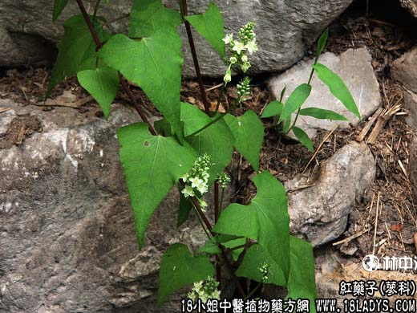

【中药概述】红药子为蓼科翼属植物翼蓼的干燥块根。酸、苦、涩，凉。 1．清热解毒，止血止痛。适用于肠炎、痢疾、便血等症，本品8～15g，与大黄、黄芩等清热药配伍应用。 2．治烧伤、狂犬咬伤，鲜用捣烂外敷。 【药效鉴别】 盐制者补肾；醋制者止血；碱制者健胃。 【化学成分】 含大黄素、大黄甙及蒽醌类物质。 【用量用法】本品8——15g，水煎服，或入剂。外用适量。
本文解释权归中药大全，本文地址： https://www.daquan.com/post/1875.html